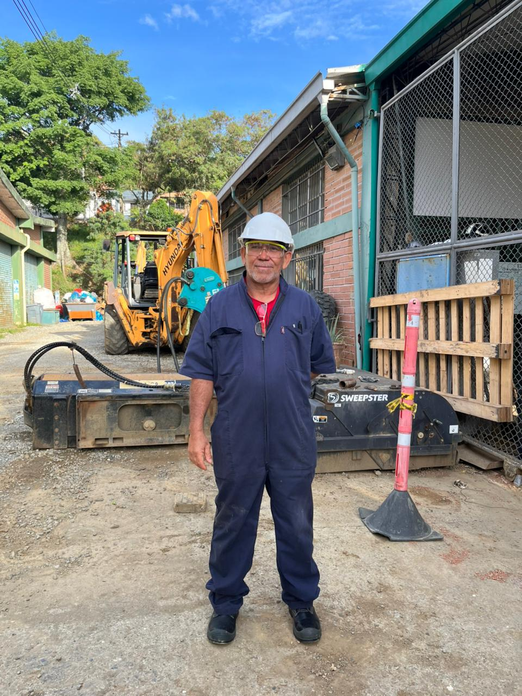

Los 5 Niveles de la Jerarquía GTC 45
Ordenados de mayor a menor efectividad para la mitigación del riesgo laboral en la fuente, el medio y el individuo.
Eliminación
Quitar completamente la fuente o condición peligrosa del ambiente de trabajo.
- Retiro de maquinaria o equipos obsoletos sin uso
- Supresión definitiva de tareas de alto riesgo
- Remoción de residuos cortopunzantes o vidrios rotos
- Nota: Es el más efectivo pero difícil al 100%
Sustitución
Reemplazar un peligro o material de alto riesgo por uno que represente menor peligro.
- Sustitución de sustancias químicas agresivas por solventes ecológicos
- Cambio de insumos tóxicos por auxiliares biodegradables
- Pinturas base agua en reemplazo de solventes inflamables
Ingeniería
Mejoras técnicas y tecnológicas en máquinas, herramientas e infraestructura para aislar el peligro.
- Sensores de presencia y paradas de emergencia
- Sistemas de seguros automáticos e interlocks
- Alarmas sonoras y luminosas de advertencia
- Guardas protectoras en partes móviles y telares
Administrativos
Medidas de gestión, organización y procedimientos para concientizar y regular el comportamiento.
- Capacitaciones continuas en SST
- Carteleras visuales y campañas de concientización
- Señalización de rutas y áreas de riesgo
- Simulacros de evacuación y emergencias
EPP
Elementos de Protección Personal como barrera final entre el individuo y el peligro.
- Obligatorio por Actividad Económica
- Barrera ➔ Disminuye la severidad de la lesión
- No elimina el peligro en la fuente
- Protección en cabeza, extremidades y alturas
Evidencias de Controles y EPP en el SENA CTGI
Casos fotográficos reales capturados en las instalaciones del Centro Tecnológico de Gestión Industrial que ilustran controles administrativos y EPP por actividad económica.

EPP · Maquinaria Pesada AmpliarOperario de Mantenimiento y Maquinaria Pesada
Trabajador en patio exterior de talleres portando el equipamiento de protección reglamentario frente a retroexcavadora y barredora industrial Sweepster.
 EPP · Servicios y Jardinería
Ampliar
EPP · Servicios y Jardinería
Ampliar
Mantenimiento de Áreas Exteriores y Jardinería
Operario de servicios integrales realizando labores de cuidado de jardines y canaletas de desagüe con indumentaria de protección contra humedad y biológicos.
 EPP · Laboratorios y Química
Ampliar
EPP · Laboratorios y Química
Ampliar
Ambientes de Laboratorio y Control de Calidad
Uso de elementos de bioseguridad y protección química para evitar contacto dérmico o inhalación de vapores, reactivos y agentes biológicos en prácticas formativas.
 Control Administrativo · Cartelera
Ampliar
Control Administrativo · Cartelera
Ampliar
Cartelera Informativa y Campañas SST SENA
Punto de comunicación visual institucional que divulga las reglas que nos protegen, compromisos de SST, matriz de riesgos en el entorno y números de emergencia (Línea 123).
 Control Administrativo · Señalización
Ampliar
Control Administrativo · Señalización
Ampliar
Señalización y Despeje de Rutas de Evacuación
Control preventivo para evitar el bloqueo u obstaculización de vías de escape y circulación peatonal con mobiliario en caso de presentarse una evacuación de emergencia.
 Control Administrativo · Bioseguridad
Ampliar
Control Administrativo · Bioseguridad
Ampliar
Protocolos y Recomendaciones de Bioseguridad
Instrucciones gráficas visibles en accesos peatonales sobre uso de tapabocas, etiqueta respiratoria, lavado de manos, distanciamiento y diligenciamiento de encuestas vía QR.
Clasificación de EPP por Zona Corporal
Especificaciones técnicas de los elementos de protección según las áreas del cuerpo y la actividad económica que se desempeñe.
Cabeza y Rostro
- Casco de seguridad: Protección contra impactos y objetos en caída.
- Gafas de policarbonato: Protección contra esquirlas y químicos.
- Tapabocas / Mascarilla: Filtro de partículas y bioseguridad.
- Tapa oídos / Copas: Reducción de decibeles en telares y talleres.
Brazos y Manos
- Mangas de carnaza / lona: Protección ante abrasión y calor.
- Chaquetas / Overol: Cobertura corporal total contra salpicaduras.
- Guantes de nitrilo / látex: Manejo químico y biológico.
- Guantes de vaqueta / carnaza: Trabajo mecánico y cargas pesadas.
Pies y Piernas
- Botas con puntera de acero/composite: Impacto y aplastamiento.
- Botas pantaneras de caucho: Humedad, jardinería y lodos.
- Pantalones reforzados: Resistencia a desgarros y fricción.
- Rodilleras industriales: Apoyo ergonómico en posturas bajas.
Marco Legal Colombiano: De acuerdo con la Resolución 0312 de 2019 y la GTC 45, los Elementos de Protección Personal son de suministro obligatorio y gratuito por parte del empleador según la matriz de riesgo de cada actividad económica, y su uso es obligatorio por parte de aprendices, instructores y colaboradores.